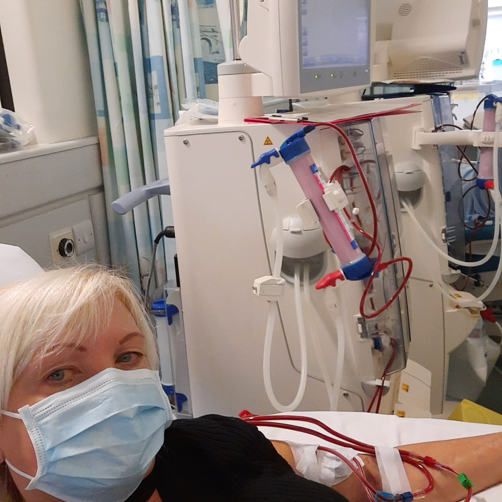

Dialysis is something I do. It doesn’t define me.
Recently, pathology had the privilege of meeting a phenomenal woman. Her name is Nikki Fretwell. She is a mother, a musician, a gym lover and has even presented her own radio show. She spent 22 years in education and now speaks at renal conferences, and supports other people with kidney disease. As a renal patient herself, Nikki was interested to know of potential effects due to delay of sample receipt and processing, for blood samples taken at home. It was especially important to her, to know if the laboratory staff were aware of the importance of her blood results as a renal patient, and that we understood the how the results would affect her, and other renal patients. Especially considering that she dialyses at home, herself. For Nikki, she must tailor her dialysis dependant on the monthly blood test results she receives: Pre and post dialysis bloods reflect how well she dialyses. Everything must be assessed via blood tests as no urine sample is available for analysis. (Some dialysis patients do not produce urine.)
All blood samples come from a fistula in Nikki’s arm- she takes the blood herself! The fistula is her lifeline. There is no other access to blood, as her veins are brittle and calcified. So, she protects her lifeline and takes her own blood. She told us ‘‘Nobody else is allowed to come near me with a needle’’
Nikki is one of the longest surviving non-transplanted dialysis patients in the UK, having been on dialysis for 34 years!
At only 17, she started to experience symptoms which were affecting her quality of life, and was later diagnosed with the autoimmune disease, Focal segmental glomerulosclerosis. FSGS attacks the nephrons in the kidneys. So, at 17, she was put on the transplant list. Three years of pain and difficulty, medications and missing out on teenage life, at the age of 19, she asked, “Will I be better off on dialysis?” and after advocating for herself, things started to improve. She has had to advocate for herself again and again and again. She is the reason she is still so strong all these years later.
"You have to know your own condition, and you have to be able to advocate for yourself in a way that other people will listen to. So that is a constant thing, and it's very common in dialysis patients, kidney patients in general, that feel they are unheard a lot of the time."
During her time dialysing at the hospital, She would make the effort to ask the nurses, scientific and medical questions, to better understand her condition and learn as much as she could from them. There wasn’t the access to the internet or google then. And you spend a lot of time with these nurses if you’re having dialysis at the hospital. Hospital dialysis is 3 times a week, every week, forever, or until you get a transplant. There is no time off.
"dialysis patients spend a lot of their time waiting. Waiting for hospital appointments, waiting for GP appointments, waiting for transport to and from dialysis, waiting for a machine, waiting for a transplant. We spend a lot of time waiting, and then you sit on the machine for four hours and wait until the four hours is over."
Home dialysis has offered some freedom by getting rid of those strict time restrictions and has allowed Nikki to not only work but do all of kinds of hobbies and activities. She has been dialysing overnight at home since 2014, which has given her more independence and control over her life.
At just 21, she learned to put her own needles in so she could dialyse at home. Not too long after this, she fell pregnant. Nobody in the world, receiving dialysis, had ever had a baby. The very few people who had got pregnant, sadly never had a successful birth. She told us that "Dialysis patients, generally speaking, don't get pregnant. Very often they have no menstrual cycle, and even if they do, their bodies are just not able to sustain any pregnancy, if they've got creatinine of over 300."
Her son is now in his 30s! Even with the odds stacked against her, she carried her baby until 7 months, and he was born weighing just under two pounds.
So… why did Nikki not have a transplant?
She did! After almost 20 years of being on the transplant list, waiting for a rare tissue type match, Nikki had a kidney transplant. Unfortunately, however, it is not like it is portrayed on TV, where it’s a complete fix and you just carry on with life with a spring in your step. There are difficulties when things go well and unfortunately things don’t always even go well. Nikki faced complications and after 5 months the kidney was removed. She made the decision not to go back on the transplant list.
Her take home message is that long term dialysis should be promoted. Everybody seems to think that a transplant is the only next step. She wants people to know not to put their life on pause waiting for a transplant and has proven that you can absolutely live without one.
If you want to know more about this incredible woman, please keep a look out for the interview material available soon: Question and answers will be shared from our interview with Nikki, with an accompanying video.
Social Media Showcase
We're looking for staff to help us create a series of videos for all departments, promoting our role and what we do in the lab. Please send us your videos to help kick-start this exciting project!
Submit Your Video IdeaFor Now, Get Inspired by These Videos...
A Day in the Life (TikTok)
A great short video showcasing the work of Biomedical Scientists.
Watch on TikTok"Biomedical Science is like medicine but easier"
A Q&A short addressing this common misconception.
Watch on YouTubeAll about blood smears (Part 1)
A quick and informative look at creating blood smears in the lab.
Watch on YouTubeQ&A with a BMS Apprentice
An insightful Q&A session with an NHS apprentice Biomedical Scientist.
Watch on YouTube